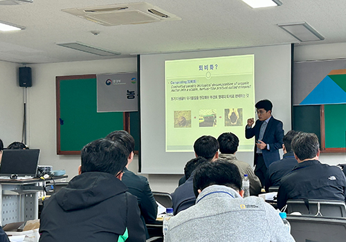
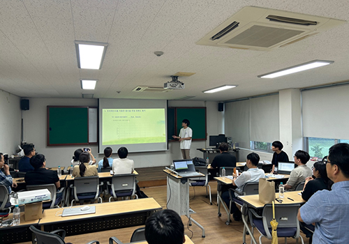
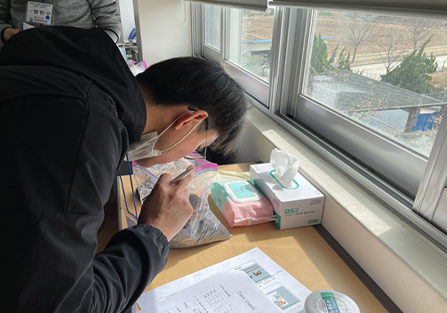
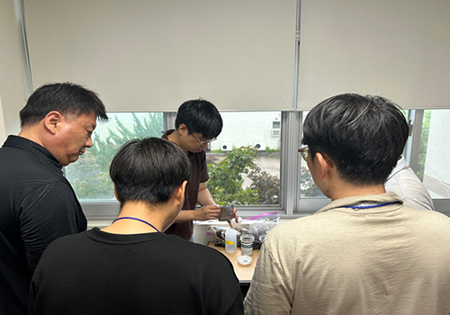
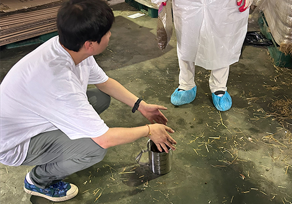
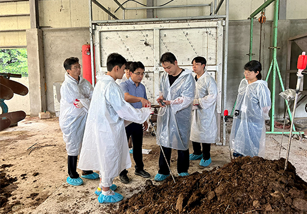
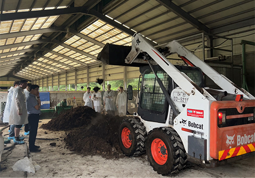
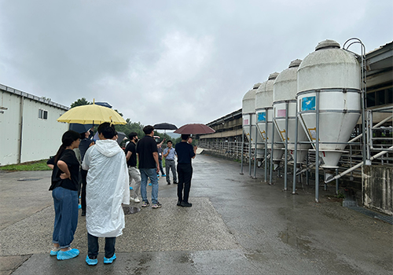

집합교육 프로그램 소개
본 연구실에서는 축산악취 저감 및 가축분뇨의 적정한 처리·이용 등 현장에서 활용 가능한 축산환경 실무기술 위주의 집합교육 프로그램을 축산환경관리원으로부터 위탁을 받아 2018년부터 운영해오고 있다. 본 교육프로그램은 가축분뇨 관련 종사자, 축산농가, 농축협 직원, 공무원 등의 축산환경 관련 지식 함양과 전문인력 양성을 목표로 하고 있다.
주요 교육프로그램
- 농·축협 축산환경개선 역량강화 집합교육
- 축산환경 담당 공무원 가축분뇨 양분관리 실습교육
- 축산환경개선 역량강화 실습교육
- 축산환경 전문컨설턴트 양성교육
퇴비화 교육 내용
퇴비화 개념 및 이론 강의
- 퇴비 및 퇴비화 정의
- 퇴비가 토양에 미치는 영향
- 퇴비화에 영향을 미치는 요소
- 퇴비더미 교반이 퇴비화에 미치는 영향
퇴비 실습 교육
- 퇴비 부숙도 평가
- 퇴비원료혼합
- 퇴비화 상태 진단
- 가축사육 및 분뇨 처리 시설 견학
-


퇴비화 관련 이론 강의
-

부숙도 관능평가
-

부숙도 기기분석(콤백)
-

밀도 측정
-

퇴적식 퇴비화 상태 진단
-

퇴비더미 뒤집기
-

시설 견학
축산환경관련 교육 실적
- 교육생 236명 이수 (2018~ 현재)
- 교육만족도 조사 결과 : 평균 4.83점(5점 만점)